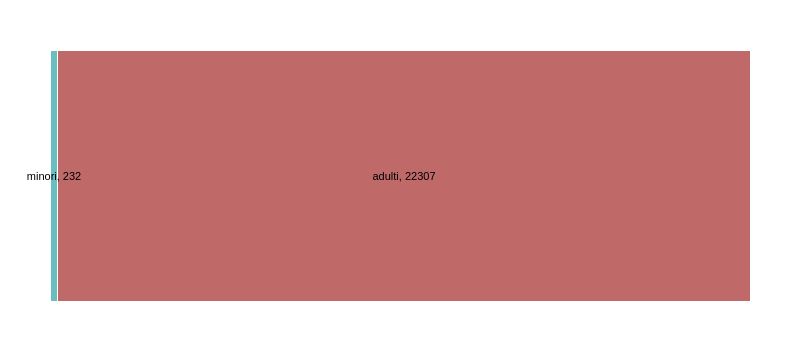

Ricerca data-driven sul tema dei rifugiati realizzata durante un laboratorio di data journalism nel mese di Giugno 2016 a Lecce
Nel periodo compreso tra il 20 maggio e il 20 giugno 2016 nelle province di Lecce, Brindisi e Taranto gli arrivi di migranti in fuga dai teatri di guerra mediorientali sono 2041. Il dato è ricavato sommando il numero delle persone che hanno raggiunto le coste della Puglia meridionale con mezzi di fortuna (1341) e le persone recuperate in mare, nel tratto che separa il Nordafrica dal continente europeo, da imbarcazioni impegnate in operazioni di recupero e poi accompagnate, nell’ambito del sistema di accoglienza predisposto dalle autorità italiane, nel Cara di Brindisi e nell’hotspot di Taranto (700). Il porto di Brindisi risulta il principale punto di approdo per i nuovi arrivi nel Salento: nell’ultimo mese ha visto sbarcare ben 1293 migranti, di cui 71 minori, tutti provenienti da salvataggi effettuati nel Canale di Sicilia da navi impegnate nell’operazione internazionale Frontex. Segue il porto di Taranto, con i 700 migranti sbarcati nell’ultimo mese. La costa salentina resta invece interessata da sbarchi con mezzi di fortuna, come nel caso dei 48 migranti approdati a Porto Badisco, nei pressi di Otranto, 14 dei quali minori, rintracciati dalle forze di polizia lo scorso 31 maggio e accompagnati nel Centro di prima accoglienza Don Tonino Bello.
 La presenza di persone immigrate residenti a Lecce, al netto delle persone presenti temporaneamente o in attesa della carta d’identità, è stata nel 2016 di 6689, il 7% della popolazione locale, sotto la media nazionale, del 9,4%. Tra loro c’è una lieve prevalenza delle donne: 3371 rispetto agli uomini, che sono 3318. Già su scala provinciale il dato è molto più accentuato: le donne sono 12160 rispetto ai 10379 e le proporzioni aumento man mano che il dato diventa regionale (64554 rispetto a 58168) e nazionale (2.644.666 rispetto a 2.381.487). I minori stranieri presenti in Italia nel 2016 sono 70.053; in Puglia 1542; in provincia di Lecce 232, nel comune di Lecce 78. I minori stranieri non accompagnati, cioè minori che arrivano in Italia senza alcun adulto di riferimento, rappresentano un fenomeno che comincia a delinearsi negli anni ‘90 e risulta in costante aumento. I dati del Ministero delle Politiche sociali ci dicono che al 31 dicembre 2015 i m.s.n.a in Puglia sono 1.102 e rappresentano il 9,2% del totale delle presenze in Italia. Le strutture di accoglienza in cui sono presenti m. s.n. a., in Puglia, sono 102. La Puglia rientra tra le prime 5 regioni per maggior numero di strutture presenti. I comuni pugliesi che aderiscono alla rete dei comuni del programma nazionale sono Bari, Brindisi e Lecce.
Il primo approdo europeo per i migranti in fuga da conflitti, carestie, soprusi, instabilità politica ed economica è Italia, che nel 2014 ha visto arrivare sulle sue coste oltre 170mila migranti, la cifra più alta registrata nel nostro Paese, secondo il dossier "Sbarchi, richiedenti asilo e presenze irregolari" della Fondazione ISMU. Secondo la stessa indagine, per ovvie ragioni geografiche, i primi centri di approdo per migliaia di persone sono situati nelle regioni del Sud. Sicilia, Lazio,Campania e Puglia sono tra quelle che ne accolgono in maggior numero, secondo il ministero dell'Interno che ha aggiornato a febbraio 2015 i dati relativi agli arrivi di migranti sulle coste italiane. Il confronto con gli anni precedenti mostra un incremento degli sbarchi nel 2014. Sulla base dei dati e degli indicatori su immigrati e nuovi cittadini forniti dall’ISTAT (Immigrati.ISTAT) relativi al periodo 2007-2013, emerge che a livello nazionale sono stati registrati ogni anno più di 250 mila ingressi, con flussi maggiori nel triennio 2009-2011. Focalizzando l’attenzione sul contesto pugliese, nello stesso periodo di riferimento i permessi di soggiorno registrati sono stati sempre intorno al 3% del totale nazionale, discostandosi dall’andamento dei relativi flussi. Nel triennio 2009-2011, difatti, durante i maggiori ingressi di immigrati in Italia, la media pugliese non ne ha risentito, rimanendo invariata. Entrando più nello specifico a livello micro-territoriale, con riferimento alle tre province della penisola salentina, dalla stessa indagine ISTAT si evince che rispetto al totale annuale regionale i maggiori ingressi di cittadini non comunitari si registrano nella provincia di Lecce (mediamente sul 12%), rispetto a quelle di Taranto (in media 8%) e Brindisi (6%).
La maggior parte dei lavoratori migranti stagionali regolari presenti nel le campagne neretine durante l’estate 2015 possiede un permesso di soggiorno per motivi di lavoro subordinato (27,08%). Assommando fra loro i titolari di protezione sussidiaria 18,75%, asilo 12,50% e motivi umanitari 10,42% ci si rende conto che la percentuale di incidenza di individui titolari di una forma di protezione umanitaria o internazionale è altissima e predominante, pari complessivamente al 41,67%. Tale dato evidenzia una sorta di ‘processo incompiuto’ delle politiche a supporto dei reali percorsi d’interazione per rifugiati e richiedenti la protezione internazionale. Fonte dei dati: "I lavoratori stagionali migranti di Nardò", Donatella Tanzariello, Unisalento
Il Gruppo Umana Solidarietà (GUS) “Guido Puletti” opera nell’ambito della cosiddetta seconda accoglienza delle persone che hanno ottenuto protezione internazionale. Ad oggi sono operativi 10 progetti, che interessano 15 Comuni tra Puglia e Marche. Sono 110 gli operatori che lavorano nei centri dello Sprar: 80 dipendenti, 10 operatori di supporto e 20 esterni. Dal 2011 a oggi il GUS ha ricevuto finanziamenti per un totale di €12.686.147,07 per l’accoglienza di 1072 migranti, in prevalenza maschi (971 rispetto alle 101 donne). Le fasce di età più rappresentante sono quelle tra i 20 e i 25 anni e tra i 25 e i 30 (rispettivamente 323 presenze e 259). Sono 63 i minori che hanno ricevuto assistenza. Le persone accolte sono arrivate da 42 Paesi, soprattutto da Pakistan (167), Nigeria (142), Afghanistan e Somalia (123). Il tipo di permesso di soggiorno ottenuto più spesso dagli ospiti delle strutture è la protezione umanitaria (270). Il permesso non è stato accordato in 284 casi. Tra le tipologie di servizi per l’integrazione di cui hanno usufruito gli ospiti spiccano i servizi per l’inserimento lavorativo (477) e il contributo per l’affitto di un alloggio una volta lasciata la struttura (59). In 121 casi gli immigrati hanno lasciato le strutture per l’inserimento economico.
“Il Salento Accoglie” del GUS Puglia è nelle terre di Acaya e Roca dal 2014 e presenta tre progetti per l’inserimento dei cosiddetti migranti ordinari, uno per i disabili e un terzo per il resettlement di alcuni esponenti di quest’ultima categoria. Per i progetti sono stati ricevuti finanziamenti complessivi per 2.735.222 euro. Sono 16 gli operatori coinvolti e 184 i migranti assistiti: 126 tra gli ordinari (6 donne); 17 disabili (nessuna donna); 41 soggetti in resettlement (22 uomini e 19 donne). Tra i 18 e i 20 anni i più presenti tra gli ordinari (43); tra i 30 e i 35 i disabili (7); minorenni gli ultimi (26). Sono 30 i permessi respinti tra gli ordinari, nessuno per le altre due categorie. Tutti titolari dello status di rifugiati i destinatari di resettlement, provenienti dalla Siria. Afghanistan il Paese più rappresentato, insieme al Pakistan per la sola categoria degli ordinari. Un buon servizio di formazione e di inserimento economico (82 e 31) hanno evitato il contributo per l’affitto agli ordinari.
Questo progetto è stato realizzato il 20 giugno 2016 durante il laboratorio di data journalism organizzato dal GUS e dall'associazione Gli Additivi, e coordinato da Andrea Nelson Mauro di Dataninja.it. I dati e le informazioni presenti su questa pagina sono consultabili a questo indirizzo e sono frutto delle ricerche e delle analisi del team di lavoro composto da: Andrea Aufieri, Marco Spinelli, Alberto Mello, Ilaria Florio, Manuela Tritto, Francesco Marasco, Federica Legittimo, Federica Ferri, Marta Ampolo, Tania Arellano. Se trovi errori o hai segnalazioni da fare, manda una email all'indirizzo info@ondata.it.